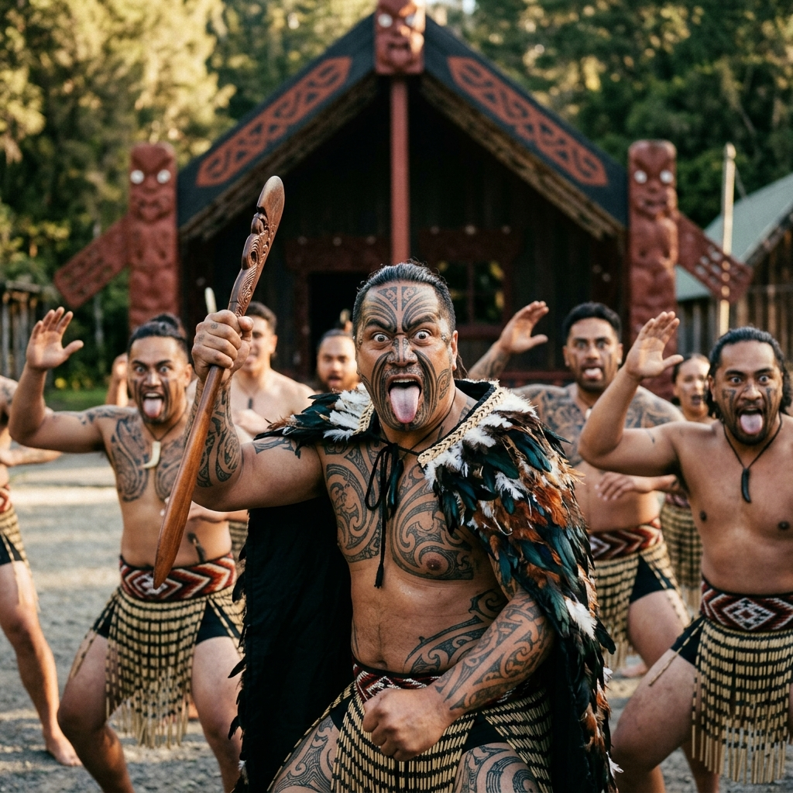
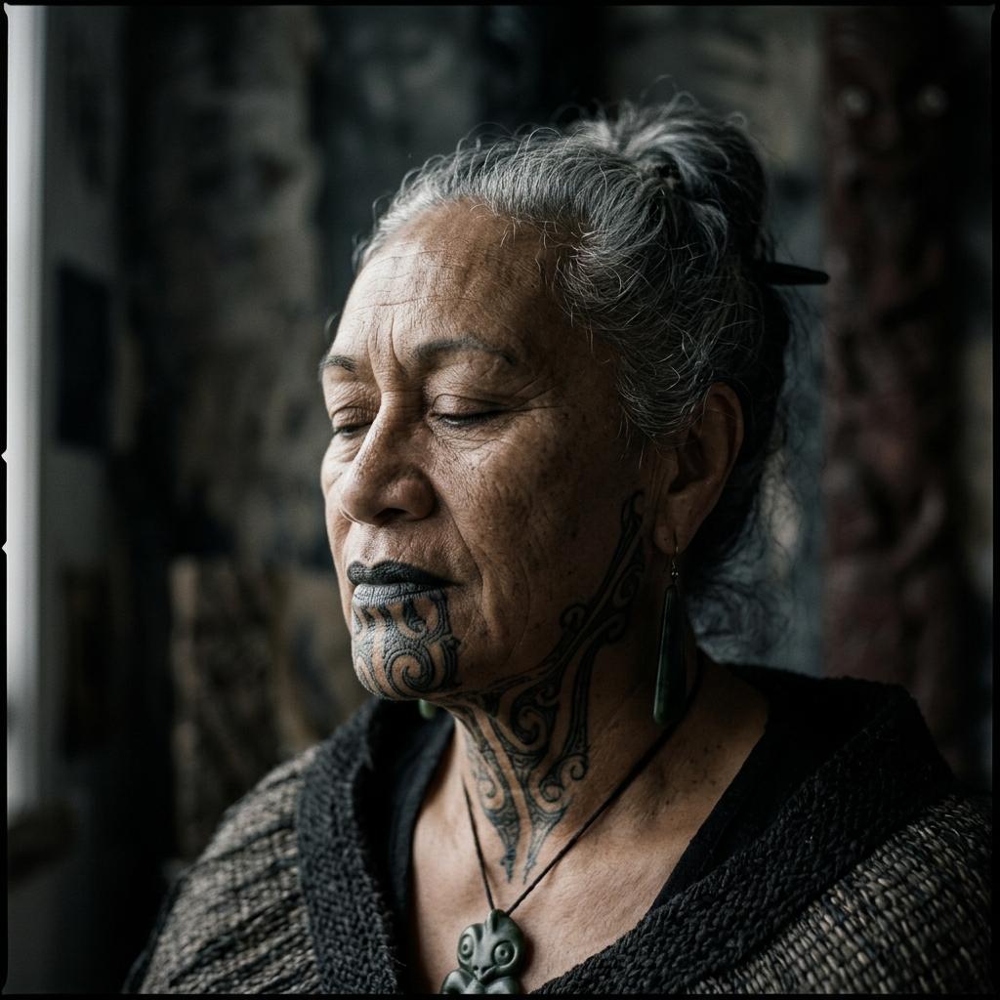
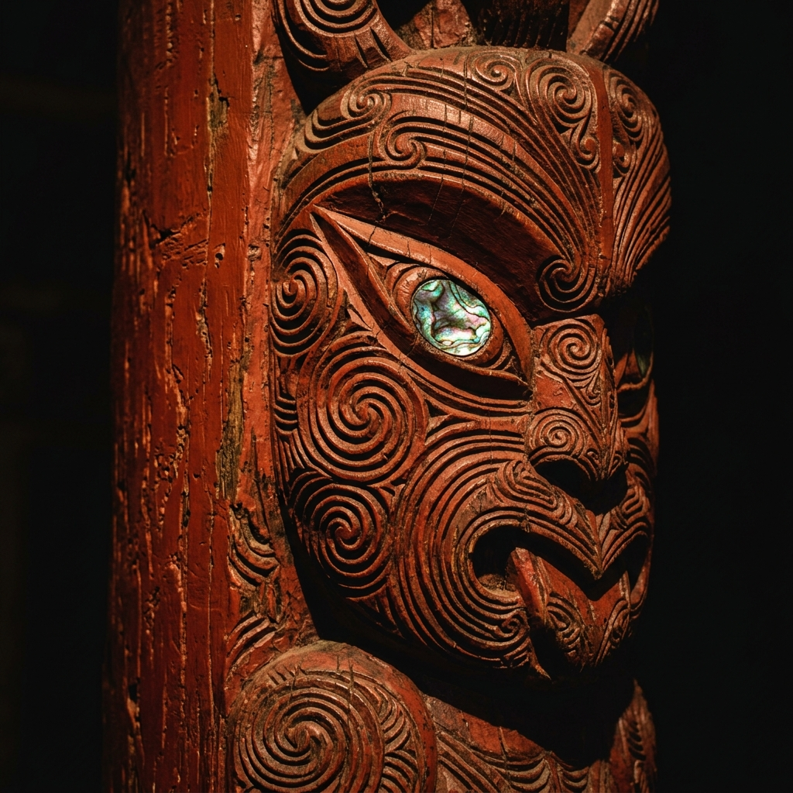
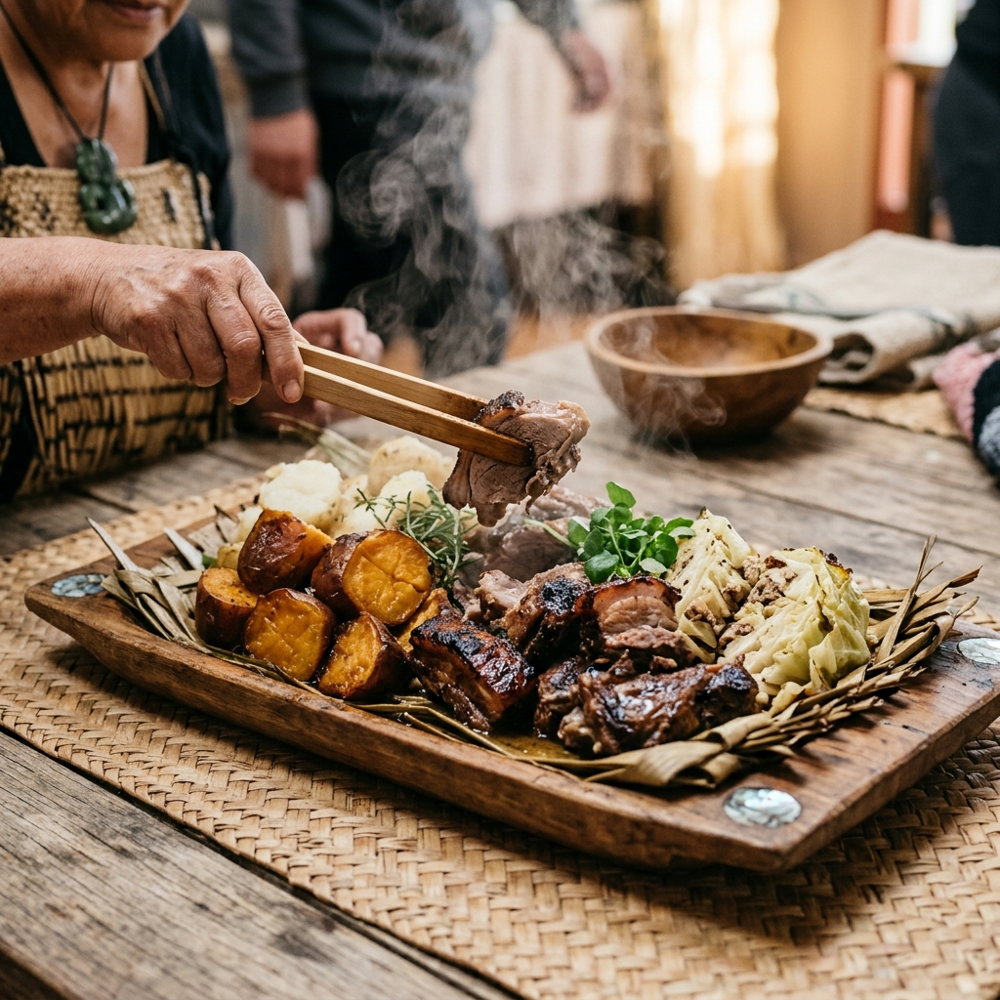
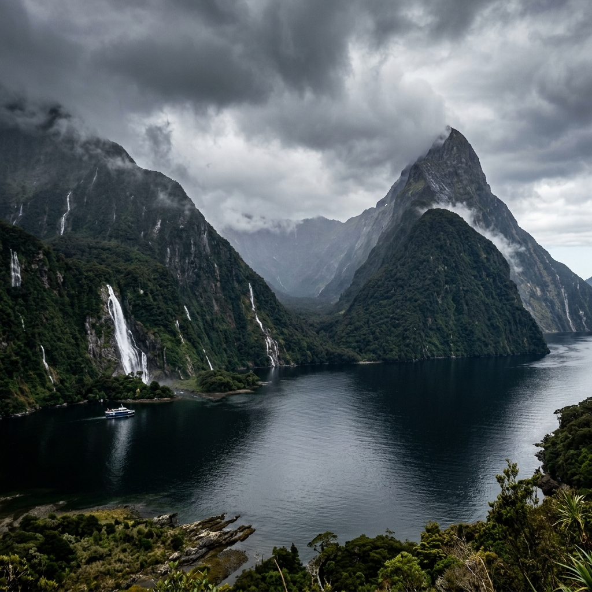
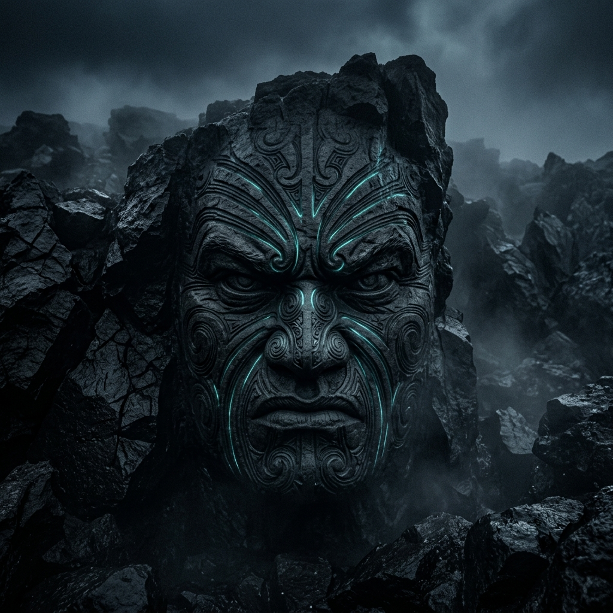

Yeni Zelanda topraklarının yerli halkı Māori'lerin kadim dünyasına, doğayla iç içe geçen mitolojisine ve büyüleyici geleneklerine yolculuğa çıkın.

Māori halkı için evren, yaratılışın derin anlatıları ve tanrıların soyağacı üzerine kuruludur. İnsan ile doğa arasındaki bağ, bu mitolojik kökenlerle açıklanır.
Ranginui (Gökyüzü Babası) ve Papatūānuku (Yeryüzü Anası), evrenin başlangıcında birbirlerine sıkıca sarılmışlardı. Bu kucaklaşma dünyayı karanlığa boğuyor, çocuklarının (tanrıların) ışıkta yaşamasına engel oluyordu.
Sonunda, ormanların tanrısı Tāne Mahuta sırtını yeryüzüne, ayaklarını gökyüzüne dayayarak anne ve babasını birbirinden ayırdı. Gökyüzü yukarıya yükseldi, yeryüzü aşağıda serildi; böylece ışık dünyaya girdi ve yaşam başladı.
Māori'lerin kökeni, Pasifik'teki efsanevi anavatanları olan Hawaiki'ye dayanır. Yaklaşık MS 1300 civarında, kaşif **Kupe** liderliğindeki büyük okyanus kanolarıyla (Waka) güneye doğru yelken açtılar.
Ufukta beyaz, uzun bulutlar gördüler ve bu topraklara **Te Ao Maori** (Uzun Beyaz Bulutun Ülkesi) adını verdiler. Gelen yedi büyük kano, bugün Māori kabilelerinin (Iwi) temel soy bağlarını oluşturur.
Māori inancında her nesnenin ve canlının bir **Mana**'sı (manevi güç/saygınlık) ve **Mauri**'si (yaşam gücü) vardır. İnsanlar doğanın efendisi değil, onun birer koruyucusu ve akrabasıdır.
Doğayla kurulan bu dengeli ilişki, günümüzde de çevre koruma politikalarında Yeni Zelanda'da yasal olarak tanınan ve uygulanan bir felsefedir.
Māori kültürü, beden dili, müzik ve ahşap oymacılığıyla kendini dışa vuran son derece güçlü bir görsel dile sahiptir.



Haka dansının en bilinen türü olan **Ka Mate**, Şef Te Rauparaha tarafından düşmanlarından kaçarken ve ölümden kurtulduğunda yazılmıştır. Kelime anlamı "Ölüm mü, Yaşam mı?" sorusunu barındırır.
Hāngī, Māori halkının bin yılı aşkın süredir özel günlerde ve topluluk etkinliklerinde kullandığı geleneksel toprak altı fırınlama tekniğidir. Yemeklere benzersiz bir isli ve yumuşak lezzet kazandırır.
Toprakta derin bir çukur kazılır. Bu çukur yemeğin pişeği doğal fırındır.
Çukurun içine büyük volkanik taşlar konur ve üzerlerinde güçlü bir odun ateşi yakılır. Taşlar kor haline gelene kadar saatlerce ısıtılır.
Pork, kuzu eti, tavuk, patates ve tatlı patatesler (kūmara) geleneksel olarak keten yapraklarına sarılarak sepetlere yerleştirilir.
Sepetler sıcak taşların üzerine yerleştirilir. Üzerleri ıslak çuvallarla ve tamamen toprakla kapatılarak buharın içeride kalması sağlanır. 3-4 saat yavaşça pişer.

Māori toplumunu ayakta tutan ve Yeni Zelanda'nın genel kültürüne de yön veren üç temel ahlaki sütun.
Karşılıklı saygı, cömertlik ve misafirperverlik esasına dayanır. Topluluktaki herkesin refahını önemsemek ve misafirleri en iyi şekilde ağırlamak bu değerin özüdür.
İnsanların doğanın sahibi değil, onun birer parçası ve vasisi olduğu inancıdır. Gelecek nesiller için nehirleri, ormanları ve okyanusları koruma sorumluluğunu ifade eder.
Ortak deneyimler ve işbirliği yoluyla kurulan güçlü aile, kabile ve topluluk ilişkilerini temsil eder. Bireysellikten ziyade kolektif güç ve dayanışmayı yüceltir.
Māori tarihinin en önemli coğrafi merkezlerini veya tarihsel gelişim çizgisini etkileşimli olarak inceleyin.
Waitangi, Yeni Zelanda'nın kurucu belgesi kabul edilen 'Waitangi Antlaşması'nın (Te Tiriti o Waitangi) 1840 yılında Māori şefleri ile İngiliz Krallığı arasında imzalandığı tarihi yerdir.
Māori'lerin anavatan Hawaiki'den çıkarak büyük okyanus kanolarıyla Yeni Zelanda'yı (Te Ao Maori) keşfetmesi ve buralara yerleşmesi.
Hollandalı kaşif Abel Tasman'ın adaya ulaşması. Māori savaşçılarıyla yaşanan çatışmalar sonrası adayı terk etmesi.
Māori şefleri ile İngiliz Krallığı arasında ortak yönetim antlaşmasının imzalanması. İngilizce ve Māori dillerindeki çeviri farkları uzun yıllar sürecek toprak anlaşmazlıklarına yol açmıştır.
Māori dilinin (Te Reo) resmi dil olması, kültürün, dövme sanatının ve okullarda Māori eğitiminin yaygınlaşarak kimlik haklarının güçlü bir şekilde geri kazanılması.
Māori kültürünü ve topraklarını yansıtan etkileyici kareler.

